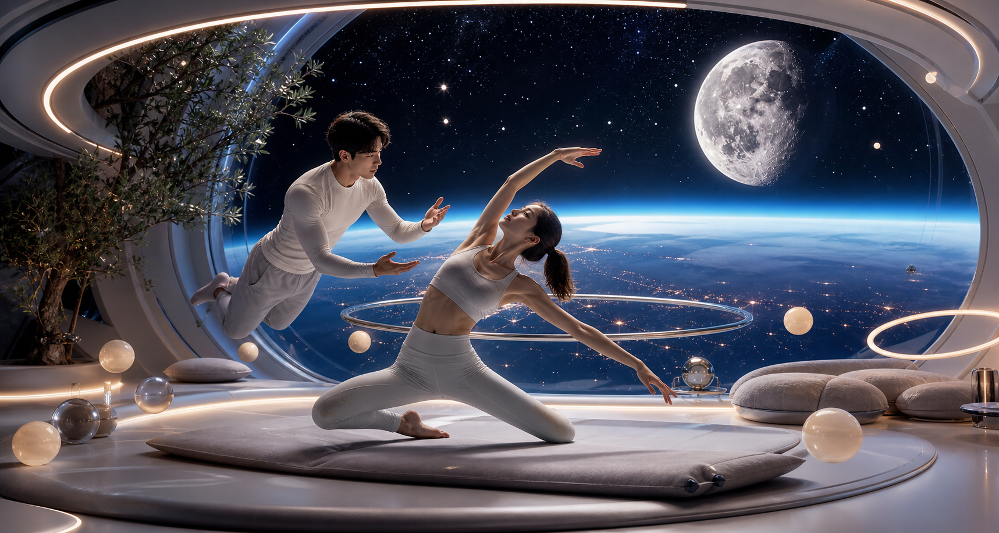
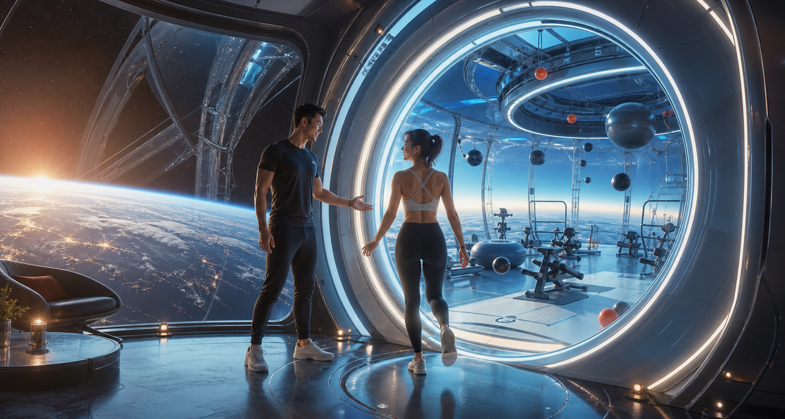
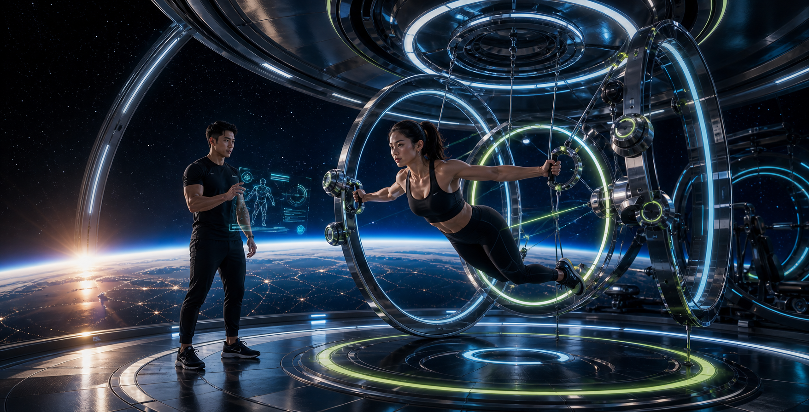
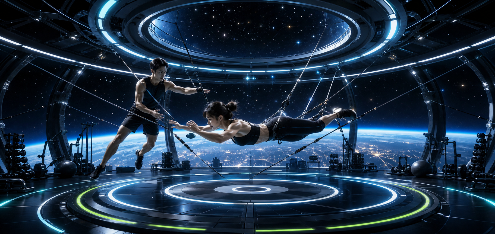
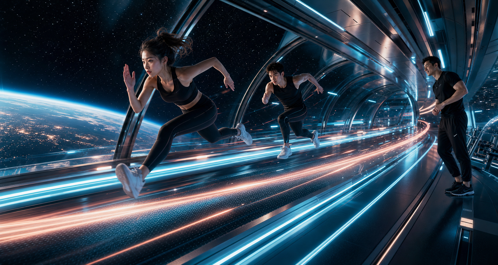
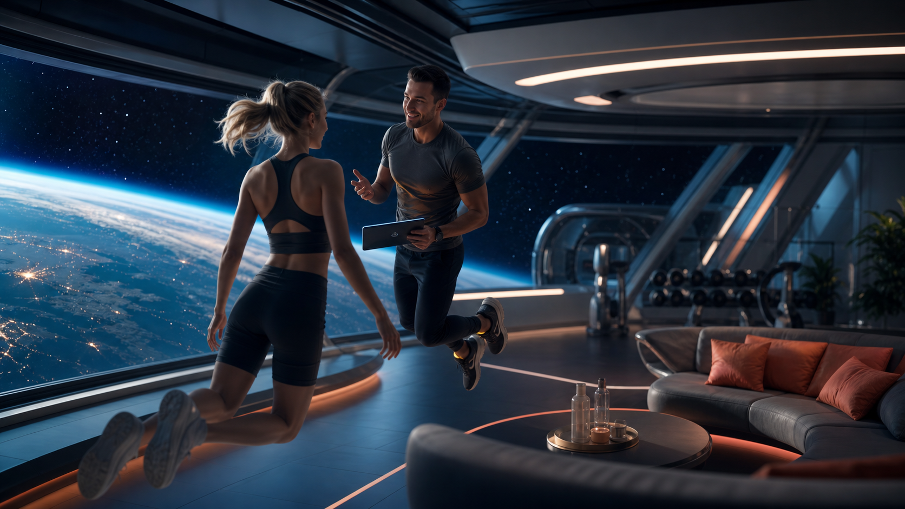
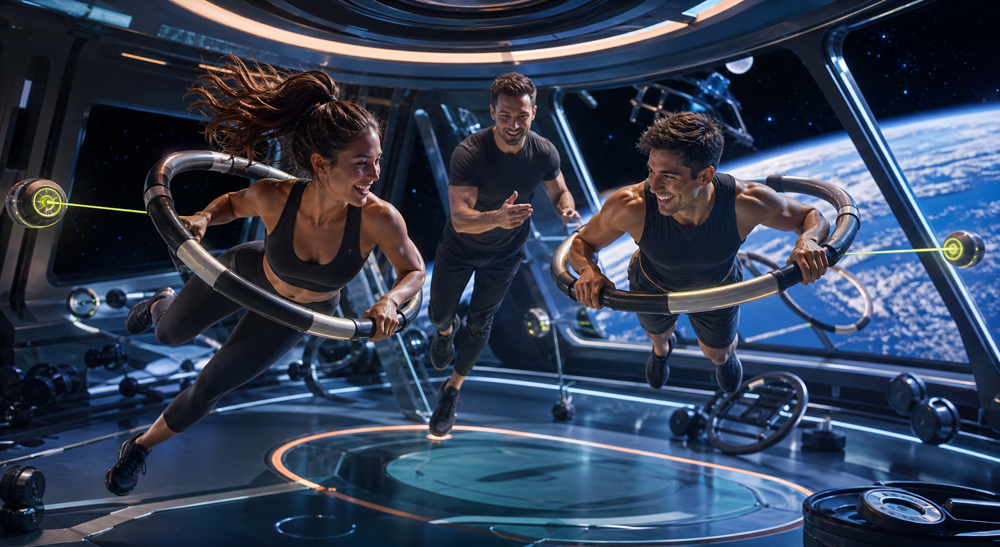
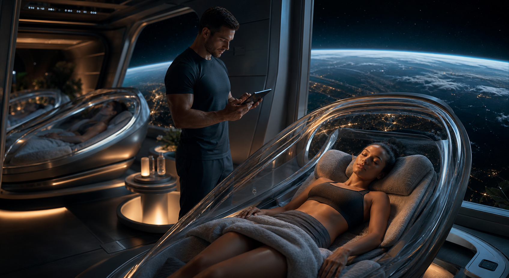

浮遊する体幹トレーニング
床に頼れない空間で、姿勢を保つための小さな筋肉まで自然に起動します。
Ground noise off
仕事の通知、帰り道の混雑、明日の予定。KAIROSでは、それらを一度だけ地球側に預けます。 受付を抜けた先にあるのは、身体の軽さだけを確かめるための小さな宇宙港です。
Concept
重りを持ち上げるだけではなく、浮く、回る、止まる、押し返す。 KAIROSは、重力から一度離れることで、自分の身体を新しい感覚で学ぶ体験型ジムです。





床に頼れない空間で、姿勢を保つための小さな筋肉まで自然に起動します。
セッション後は、地球を眺める静かなポッドで呼吸と心拍を整えます。
ケーブル、磁気抵抗、空中姿勢を組み合わせ、ゲーム感覚で身体を動かします。
Training zones
その日の気分や体調に合わせて、トレーナーが最適なゾーンを組み合わせます。 浮く、弾む、ほどける感覚で選べるプログラムです。重力設定は0.05G、0.18G、0.32Gの3種類です。
A / Float Core
360度に張られた細いケーブルを使い、空中で止まる、押す、戻る動きを練習します。
B / Meteor Run
足元に流れる光の軌道に合わせ、低重力ステップと短距離ダッシュを組み合わせます。
C / Moon Stretch
ゆっくり浮きながら、呼吸、関節、背骨の動きをほどくリカバリー空間です。
プログラム
はじめて浮く人向け。姿勢制御と軽い抵抗運動から始めます。
体幹、俊敏性、反応速度を鍛えるアクティブな標準コース。
睡眠、呼吸、柔軟性を整えるメンテナンス特化コース。
初回フライト
受付から帰還まで、まるで小さな宇宙旅行。体験後には、姿勢制御スコアとあなた専用の 「軌道トレーニングカルテ」をお渡しします。

目的と体調を確認しながら、これから始まる45分の軌道をトレーナーと一緒に決めます。

リング抵抗と浮遊姿勢を組み合わせ、遊びながら体幹と反応速度を目覚めさせます。

地球の光を眺めながら呼吸を整え、姿勢制御スコアとカルテを受け取ります。
Membership
続けるほど、身体が変わるだけでなく、日常の見え方も少し変わる。 KAIROSは「通う」より「搭乗する」と言いたくなるジムです。
Trial Ticket
Orbit Pass
Return Pass
FAQ
大丈夫です。スタジオ全体が地球と同じ空気環境に保たれている設定です。
初回は低重力の姿勢制御から始めるので、運動経験が少ない方も楽しめる想定です。
回転を少なくしたMoon Stretchから始め、体調に合わせて強度を調整します。